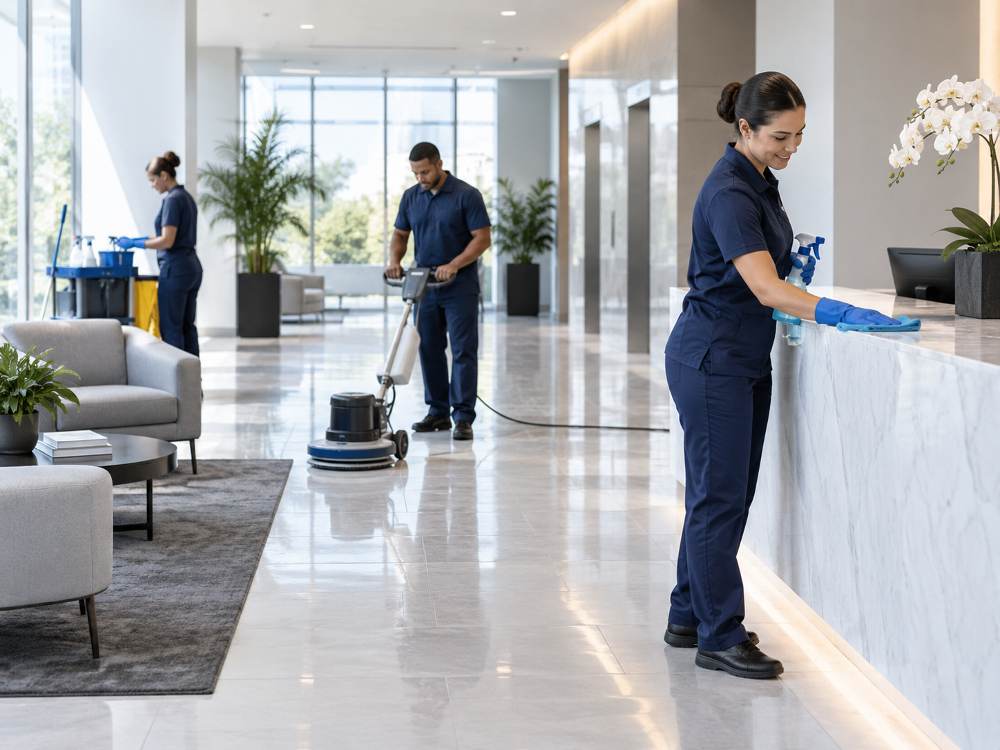

Limpeza profissional
Higienização, conservação e cuidado contínuo para ambientes que precisam manter boa apresentação todos os dias.
A Prime organiza rotinas de limpeza profissional de acordo com o tipo de ambiente, a frequência necessária e o fluxo de circulação. O objetivo é manter áreas internas e externas compatíveis com a rotina do cliente e com o padrão esperado para o espaço.
- Limpeza hospitalar para ambientes com exigência maior de organização e cuidado
- Limpeza pós-obra para entrega, ocupação ou retomada da operação
- Limpeza corporativa e conservação de áreas comuns, recepções e escritórios